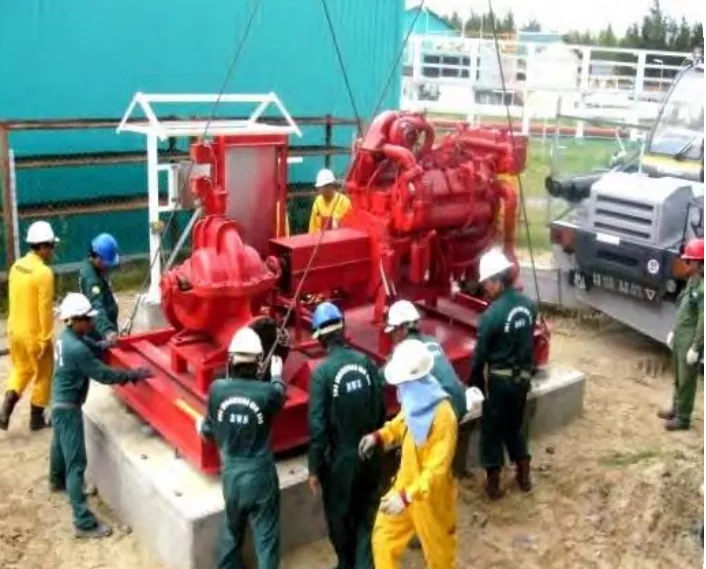
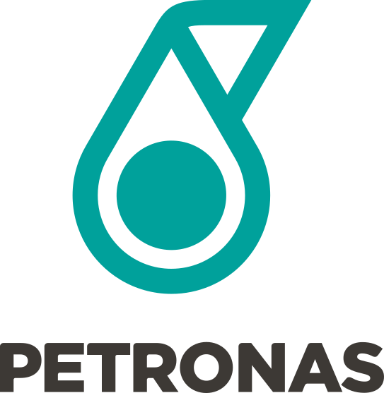
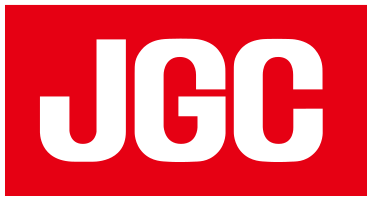
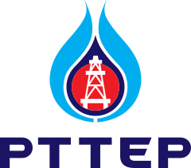
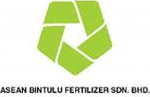
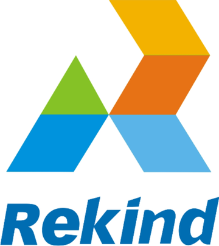
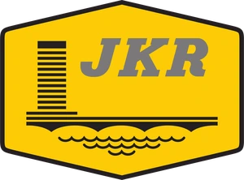

Miri & Bintulu, Sarawak
Kejuruteraan, Pembinaan & Penyelenggaraan untuk Minyak & Gas, Sejak 2002.
Kontraktor Bumiputera yang berpangkalan di Miri & Bintulu, Sarawak.

- Berlesen PETRONASLesen PETRONAS yang sah
- CIDB Gred G7Bangunan · Awam · M&E
- ISO 9001 · ISO 45001Diperakui TÜV NORD · BSI
- Ditubuhkan 2002Ditubuhkan Oktober 2002
- Syarikat BumiputeraMilik penuh · Bertaraf Bumiputera (STB)
BWS dalam angka
- Tahun pengalaman
- 20+
- Beroperasi sejak Oktober 2002
- Pangkalan operasi
- 2
- Miri & Bintulu, Sarawak
- Kontrak disiapkan
- 80+
- Minyak & gas, industri dan kerajaan
- Pelanggan utama
- 15+
- Pengendali, kontraktor EPC dan industri
Perkhidmatan
Perkhidmatan kejuruteraan dan pembinaan bersepadu
Perkhidmatan pembinaan dan penyelenggaraan bagi industri minyak dan gas, daripada kerja awam dan struktur keluli hingga mekanikal, paip dan E&I.

Pembinaan dan Penyelenggaraan Loji Industri
Pembinaan dan penyelenggaraan kemudahan minyak dan gas, loji penjanaan kuasa dan kilang berasaskan kayu.
Lihat skop
Kerja Mekanikal dan Paip
Pemasangan dan pengujian peralatan, fabrikasi, pemasangan dan pengujian paip, serta kerja letupan pasir dan cat.
Lihat skop
Pembinaan Awam, Bangunan dan Keluli Struktur
Daripada pembersihan tapak dan kerja tanah hingga asas, bangunan perindustrian, gudang dan jeti.
Lihat skop
Kerja Elektrik dan Instrumentasi
Pemasangan kabel, pemasangan peralatan, penentukuran dan pengujian instrumen, serta bantuan pentauliahan.
Lihat skopTentang BWS
Kontraktor kejuruteraan milik penuh Bumiputera
Diasaskan pada Oktober 2002 oleh profesional Bumiputera dari industri minyak dan gas, BWS telah berkembang daripada kerja penyelenggaraan loji kecil di Miri kepada kontraktor Gred G7 yang melaksanakan pakej EPCC lengkap.
Disokong oleh kemudahan milik sendiri di Miri dan Bintulu, syarikat menyediakan perkhidmatan kejuruteraan, pembinaan dan penyelenggaraan kepada sektor minyak dan gas, tenaga dan awam di seluruh Malaysia.
Ketahui lebih lanjut tentang kami
Rekod prestasi
Projek semasa
Lebih 80 kontrak sejak 2002 bagi pengendali minyak dan gas, kontraktor EPC dan agensi kerajaan. Lihat projek utama
-
2026 – 2027Sedang berjalan
Bintulu, Sarawak
Shell MDS
Multi-mechanical package (MECH03) for Project Rejuv: steel structure, equipment, piping, insulation and painting
-
2026 – 2027Sedang berjalan
Lawas, Sarawak
PETRONAS Carigali
Compressed-air pressurisation for pipeline pre-decommissioning, BV106 to KP131.2
-
2025 – 2028Sedang berjalan
Lawas, Sarawak
Ministry of Rural and Regional Development
Road from Kampung Murud Suang to the Kampung Long Pos junction
-
2025 – 2027Sedang berjalan
Bario, Mulu & Telang Usan, Sarawak
Regional Corridor Development Authority (RECODA)
Highland Development Agency Package 5: water supply and electricity infrastructure
Di tapak
Kerja terkini
Kerja loji, mekanikal, awam dan E&I di seluruh Sarawak. Lihat galeri penuh
Pelanggan
Dipercayai oleh pengendali dan kontraktor EPC
Pelanggan utama kami termasuk pengendali minyak dan gas nasional dan antarabangsa, kontraktor EPC dan syarikat perindustrian. Lihat semua pelanggan






Kemudahan
Bengkel dan limbungan fabrikasi milik sendiri
Pejabat utama dan bengkel fabrikasi kami terletak di Kawasan Perindustrian Piasau, Miri, dengan limbungan fabrikasi di Kidurong, Bintulu. Lihat kemudahan kami
Bincangkan keperluan projek anda bersama BWS
Kami sedia memberikan perkhidmatan yang lebih baik kepada anda.